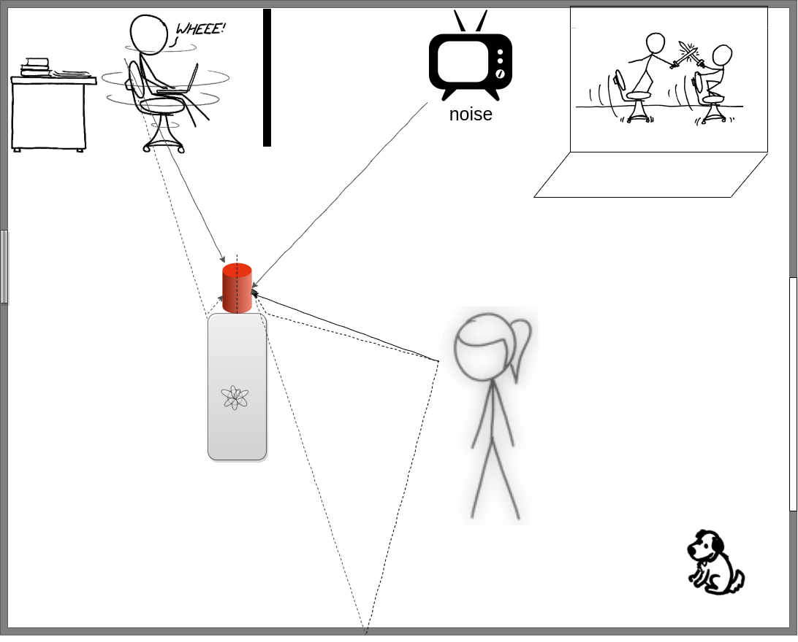

Analyzing the impact of speaker localization errors on speech separation for automatic speech recognition

Sunit Sivasankaran, Emmanuel Vincent, Dominique Fohr
EUSIPCO 2020
04 September, 2020
Problem overview

Mixture Target
- Stick figures credit: www.xkcd.com
Distant-microphone voice command
- Three main adversaries $\rightarrow~~~ $ Reverberation
- Impact automatic speech recognition (ASR) performance
- Multiple evaluation campaigns $\rightarrow~~~ $ REVERB, CHiME series
$\rightarrow~~~ $ Noise
$\rightarrow~~~ $ Interfering speech
Approaches to speech separation
- Single-channel approaches $\rightarrow~~~ $ Non-negative matrix factorization $\rightarrow~~~ $ DNN-based methods in time-frequency domain
- Hershey, J. R., Chen, Z., Le Roux, J., and Watanabe, S. (2016). Deep clustering: Discriminative embeddings for segmentation and separation. In ICASSP
- Luo, Y. and Mesgarani, N. (2019). Conv-TasNet: Surpassing ideal time-frequency magnitude masking for speech separation. TASLP
- Multichannel speech separation $\rightarrow~~~ $ Mask-based beamformers $\rightarrow~~~ $ Using phase difference along with magnitude spectra with deep clustering $\rightarrow~~~ $ Explicit use of speaker location : TDOA/DOA
- Perotin, L., Serizel, R., Vincent, E., and Guérin, A. (2018). Multichannel speech separation with recurrent neural networks from high-order ambisonics recordings. In ICASSP
- Chen, Z., Xiao, X., Yoshioka, T., Erdogan, H., Li, J., and Gong, Y. (2018). Multi-Channel overlapped speech recognition with location guided speech extraction network. In SLT